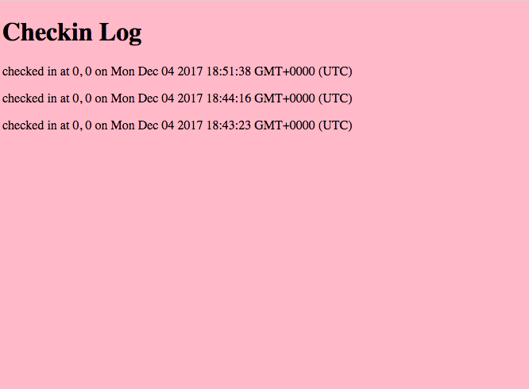

The goal is to find and document as many vulnerabilities and flaws with my partner's work. I can use whatever means necessary to do so. The project I am testing for flaws is a map that displays checkins by users. The user data, such as name, location, and date checked in, is all in the database.
I first did black box testing using curl. Then I read the source code of my partner’s assignment 3 and used that to search for additional vulnerabilities.
Issue: Javascript injection
Location: sendLocation API
Severity: High
Description of issue: The request parameters for sendLocation will accept JavaScript.
Proof of vulnerability:
Resolution: Check request parameters for special characters such as tags. To fix the issue, delete the entry from mongoDB.
Issue: MongoDB injection
Location: checkins.json API
Severity: High
Description of issue: Found that mongoDB can show all data except the query provided using login[$ne]
Proof of vulnerability:
Resolution: Check data for more than one login, and don’t send it if so (user should never be able to get data from more than one login)
Issue: XSS Vulnerability
Location: sendLocation API
Severity: High
Description of issue: The request parameters for sendLocation will accept JavaScript, and thus the site can be changed to display anything.
Proof of vulnerability:
Resolution: Check request parameters for special characters such as tags. To fix the issue, delete the entry from mongoDB.
Every instance where the user can input something has to be extensively checked to make sure the user can’t do anything they’re not supposed to. This is in regards to both the mongo database and the server itself.
https://dzone.com/articles/mongodb-preventing-common-vulnerabilities-in-the-m
https://excess-xss.com/